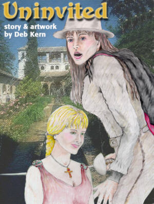

The princess was invited to Spain, or so her father said! Danielle knew this was an arranged visit. It was inevitable. She would be twenty-one years old in a fortnight, and after already turning down two of the suitors her parents had chosen, she was to be given only one more chance. Being twenty-one, a princess and unmarried in 1703 was unheard of in France. The vision of her mother fainting if she refused again came to her mind and she chuckled lightly to herself. ‘It would serve her right. I know she loves me, but all this marriage talk has darkened my soul,’ Danielle thought, as she turned her green eyes toward the open window and peered out at the dying of the day. The soft, low light outside cast a purple glow across the gardens. The twittering of a bird caught her attention and she watched it swoop effortlessly across the sky. ‘Oh little bird, what I wouldn't give for those wings.’ Danielle mused, thinking that taking flight may be her only option. ‘I'd gladly give up my title and all the spectacle of these riches to freely choose a love that was based on more than just what was appropriate and good for my country.’ A knock at her door caused Danielle to jump slightly and jolted her from her romantic notions. "Who is it?" "It's your mother darling . . . we need to talk." Danielle slowly made her way to the large wooden door, dreading the conversation that would follow. "Hello mother, some words of advice I presume. Let’s see if I remember from our last talk, behave in a ladylike fashion, be courteous and above all ACT like I am head over heals for the Spaniard," Danielle spat out sarcastically. "Danielle, what am I going to do with you? You know how hard this is on your father and I, and yet you do nothing but sabotage our efforts." her mother said brushing the folds from her gown and adjusting her oversized ruby necklace. "Really Danielle, we almost died from embarrassment at your last display in Italy. Honestly child, your father still hears about how you loaded your plate at the welcoming meal not twice but three times, and don’t even try the ‘I was only hungry’ line on me again. We know you did that on purpose. The only conclusion that young man could draw was that he would be marrying a woman who would triple in width in no time." her mother finished. Danielle couldn’t help the smirk that came across her face. She remembered very well the eating display she put on for the royal family. Wide eyes stared in amazement when she devoured three plates and then asked about dessert. She started laughing outright as the memory came to the forefront of her mind. Try as she might, Danielle’s mother couldn’t help but join in. At first her chuckles came out in half spurts and coughed gasps as she tried to cover her amusement with her handkerchief. Finally, upon watching her daughter remembering the event, she joined her in a contagious laughter. Both women gripped hands in their entertained state. As the women slowly composed themselves, Danielle’s mother gently reached up and brushed back the blonde strands of hair from her daughter’s cheek. She studied the beautiful face before her and felt a twinge of sadness. "Cherie, I know this is hard. Being born into royalty carriers with it a burden and an obligation that mustn’t be taken lightly. We have had this conversation before, and as much as your father and I love you, we must ask you to remember your position in France." She finished solemnly, bringing the conversation back to a serious tone. "We leave tomorrow morning dear. Do I have your word that you will not disappoint us again?" "You have my word, mother." Danielle said. "Thank you. Goodnight dear . . . I love you." Her mother said kissing Danielle’s cheek. As the door closed Danielle felt her hopes and dreams vanish, replaced now with the sense of responsibility and tradition. This was her duty to her family and country. Danielle rarely prayed for herself, but tonight she needed strength that was not her own. "Lord, if you see fit to give my life true meaning, then please let this man my parents have chosen be strong in will but gentle of heart. Let him understand my independence and embrace my differences. If there is a chance that he could be the holder of the blue eyes I have dreamt of for years Lord, I would be eternally grateful. But, if my life will be one of honor not desire, of loyalty not happiness and of pretenses not passion, then Lord . . . I pray you give me strength to live it." Blowing out the candle she lay down in bed and brought forth the vision of the crystal blue eyes that had been visiting her in her dreams since she was fourteen years old. Never being able to put a clear face to the eyes didn’t stop Danielle from fantasizing about them. She knew if she were ever actually looking into them, she would be seeing her true love. All she could do was hope upon hope that those eyes were waiting for her in Spain. Falling into a relaxed and dreamy state, she thought about those blue eyes once more. She had an inexpressible sweet desire to find this one true love. Danielle slowly put her hand to her mouth, nipping and sucking the tender piece of flesh between her thumb and forefinger as she imagined kissing the holder of those eyes. She imagined being pulled down on silk sheets as her dress was eased open with those blue eyes settling in, kissing her neck, collarbone . . . breasts. Slowly her hands moved lower as she gave into her desire and the vision claimed her soul. Maria woke in an overheated state, sitting straight up in bed. "No, no, no, don't wake up, not yet." She quickly flopped back down and covered her head with a pillow, willing herself back to sleep. "Arrgh . . . it's no use!" she bolted from bed and went to the window. Cora, a springer spaniel and her furry companion was at her side in an instant. "Sorry girl, I didn't mean to wake you," she said scratching the spotted, curly long ears. Cora trotted across the room and stood next to the rifle propped by the door. "No Cora, it’s not time for hunting girl. It’s even too early for the pheasant to be up." she smiled at her anxious hunting partner. Dejected but clearly understanding, the dog jumped back on the bed, made two circles and settled back into sleep. Maria watched the stars and thought about the green eyes that she had been kissing in her sleep. "Why do I always wake before I see the face that belongs to those eyes?" The princess and her entourage, which consisted of her mother the Queen, her handmaid Anne, the Queen's handmaid Sophie, the Captain of the Guard Luc and twenty of the most highly acclaimed regents of the French army, made a grand parade across France and marched into Spain. Along the way, Danielle and her mother discussed the Spanish family they were going to meet and the political climate that existed in Spain. A marriage to a high ranking Spaniard would help continue the alliance that was formed when the Bourbons came to power in Spain in 1700. Danielle was well aware of this. Philip V, the first Bourbon ruler of Spain, was chosen by Danielle's father King Louis XIV the great from direction of the Pope himself. While this decision was favored by some, many Spaniards were upset with the transfer of power back to the French. Fighting from Spanish dissidents was intense. Three years into Philip V’s rule, opposition was starting to wan but small raiding parties could still be found. King Louis XIV the great produced many offspring by maidens of the court in his younger years. However, when he married Danielle’s mother, his exploits stopped. The Queen, 14 years younger than Louis, bore him additional, legitimate children. Danielle was his youngest daughter. King Louis handpicked the gentleman that Danielle was on her way to meet. Fredrick Cordoba, son of the Minister of Spain, was set to take his father's place in the royal court. Spanish dissidents scouring the land in 1701 had mistakenly killed Frederick’s father. Fredrick, 21 years of age, was dark skinned with blue eyes and broad strong shoulders. He was the perfect political match and secretly, the King had left him for the last arrangement with Danielle. He knew his daughter would turn down the first two suitors, or so he had hoped. Now Danielle, left without a choice, would be forced to marry the man that Louis had wanted to begin with. Looking out of the windows of the horse drawn coach, Danielle dreamily commented on the Spanish countryside. "Spain is like a great castle that rises from the sea." Danielle began slowly, rhythmically, like the beginning of a poem. "The air is crisp and spicy. It reminds me of sweet hot cider on an autumn day, and look, the entire perimeter of the country is marked by ranges of mountains." Pointing, Danielle excitedly called out. "It's beautiful. Look! Many of the peaks are still snow covered." The handmaids, drawn into the vision Danielle painted, rested their heads close together peeking out of the carriage as a group. Anne was half sitting on Danielle’s lap and all three women held each other’s hands. Danielle had made up her mind to enjoy this trip, even though the outcome might lead to unhappiness. As always, Danielle lived each day finding something good and beautiful to be thankful for. "You've always had a way with words. Finding beauty in almost everything is a special gift you have," the Queen said looking lovingly at her daughter and the ladies. Danielle looked back and smiled at her mother. She snapped her head back when Anne pointed out a rabbit darting for the bushes. Danielle was a friend to everyone in the French court. Anne and Sophie were more like sisters to Danielle than hired help. Danielle treated everyone with respect and dignity. She was a breath of fresh air in the castle and the Queen knew she wouldn't be the only one to miss her youngest daughter. Watching the women laughing together, sadness crept into the Queen’s thinking. ‘I hope Danielle doesn't loose this special quality after her arranged marriage.’ she mused lost in her thoughts. The Queen looked down to her folded hands and closed her eyes as Anne, Sophie and Danielle continued to point, laugh and enjoy a sunny day in Spain. "Cora, wake him." Maria ordered softly to her companion as she swung the door open. Cora jumped up on the bed and with one long stride, stood atop the sleeping form. Tongue poised for a morning kiss, the springer spaniel looked back at her master for the command. Maria nodded and with a cold wet, slap in the face, the sleeping form awoke. "Good God! Get that mongrel out of here. Who let her in?" the irritated voice demanded as a quick hand wiped a wet dog kiss from a stunned cheek. Cora growled softy at the choice of words used to describe her and jumped down. Sleepy eyes focused on the head hovering above his bed. "I should have known! Maria, what are you doing in here so early, and didn't I tell you to keep your dog away from me in the morning? Can’t you let your poor brother sleep? You know I only have so many days of my freedom left. Do you plan to torture me to the bitter end?" Fredrick said sternly to his sister. "Now that you mention it . . . yes." Maria said sarcastically as stepped over and pulled open the heavy drapes. "Actually baby brother, I thought you might like to go hunting with us this morning. From what I hear the French Princess can eat her weight in gold." Maria placed another dig in. "There may not be enough fish and fowl in all of Spain to satisfy this girl’s appetite. Cora and I are getting a jump on it; mustn’t let the Princess starve now can we?" "Oh sure, go ahead and make your fun. Who appointed you court jester today?" Fredrick moaned. "Please, I beg of you, leave me to what little peace I have left." Fredrick rolled over and covered his eyes, too tired to continue these games. "Are you sure you won’t come then?" Maria half laughed. She was waiting for a response but none came. Walking back and leaning down, Maria saw the slow rise and fall of her brother’s chest; she placed a small kiss on his forehead and quietly walked out. Cora was one step ahead. Maria was extremely close to her only sibling. Even though she teased him, it pained her to see him forced into a marriage of convenience, but tradition and family name came at a high price. Maria knew her brother as an honest and decent man. He would treat the Princess kindly no matter what kind of person she turned out to be. Maria’s job was to make her brother’s life livable and she planned on doing anything in her power to comfort him. "She better treat him well Cora," Maria said following the wagging tail ahead of her. "Anything less than respect will end in a Royal Princess with a black Spanish boot up her butt." Maria finished toughly as she headed to the kitchen to prepare for her hunting trip. Since her father’s death, Maria was friend and guardian to her brother and mother. She naturally stepped in as head of the household and kept things running just as smoothly as her father had. Maria 30 years of age, was never an ordinary Spanish woman. Her father indulged her passion for horses, hunting and sword fighting. Most men were too intimidated to approach her, and the men who had tried, Maria found boring and a complete waste of her time. Maria’s mother had all but given up hope that marriage would ever be a part of Maria’s life. "Good morning mother." Maria addressed the yawning woman by the window. "Good morning and good morning to you little one." the woman said bending over and placing a small piece of sausage in front of Cora’s waiting mouth. "Where are you two headed so early this morning?" Maria’s mother questioned. "A little hunting to prepare for the arrival of the French Princess." Maria said laughing as she winked down at Cora. "That’s very thoughtful of you. I'm sure Fredrick will appreciate that." The elderly woman commented. Maria laughed louder as her mother looked on confused at the amusement in her daughter’s response. "Oh I’m sure he’ll think of some way to thank me." Maria joked as she grabbed a couple pieces of sausage and wrapped a piece of warm bread in a cloth. Maria and Cora headed out the door and down to the stables. The Queen’s head snapped up with the sudden stop of the carriage. "Why have we stopped?" the Queen questioned Danielle. Before she could answer a single shot rang out. The sound of running horses and shouting broke the silence. More shots were heard. The Captain of the Guard, appeared before the open carriage window. "Your Majesty, keep these doors closed and the curtains tightly pulled!" he commanded. "There are bandits afoot. Do not leave this carriage under any circumstances. I’ll let you know when it’s safe!" "Be careful Luc!" Danielle yelled out as her mother pulled the curtains together firmly. The Queen grabbed Danielle’s hand, her worried expression conveyed the truth; they were under attack. Luc quickly rode to the front of the fighting, leaving ten of his men as a wall to guard the Queen and Princess. There appeared to be at least twenty Spaniards dressed in black and armed with swords; six of whom carried single shot muzzle-loading weapons. A round whistled past his head as he jumped down from his horse. The stench of gunpowder hung in the air. He heard moaning from men in obvious pain. Turning in the direction of the cries, he saw one of his men on the ground clutching his stomach. Blood spilled through his fingers. Another of his men lay motionless a few feet away. Only he and eight of his regents were now left at the front of the fighting. It would only be matter of time before many of the Spaniards made their way towards the carriage. Drawing his sword, he engaged a bandit running his way. He did not like the odds of this situation and was hoping he could dispose of the man quickly and move on to another adversary before the other Spaniards advanced. Suddenly, behind him, he heard a woman’s voice. "What do we have here?" Maria yelled. "Is that you Ortega? What cave did your soul crawl out of today?" The man in front of the Captain pulled away and was moving backwards at a slow pace, staring at the woman approaching. "Stay out of this Maria. You should be on our side and you know it. You do not honor your country by supporting the French." Ortega spat back at her. "I see Ortega, and you call murdering innocent people an honorable action. Funny, but that has all the markings of the coward that I know you are." Maria drew her sword as she moved forward. "Call off your men or I will run you through right now." Maria said as she eased forward, stopping at the side of the French Captain. Glancing over, Luc saw a figure that left him speechless. This woman was over six feet tall, a cape covered her broad shoulders and black hair fell loosely from under a black rimmed hat. Crystal blue eyes scanned him for an instant and then retrapped her prey. A medium sized dog flanked her on the left. "Welcome to Spain." Maria said softly out of the side of her mouth. Her eyes never left Ortega. "Is the Princess safe?" "She and the Queen are in the carriage behind us mademoiselle." Luc replied just as softly. "Cora, protect!" Maria commanded her companion and motioned with the tilt of her head. Cora sprang into action. As fast as her four legs would carry her, she was past the fighting, leaving a small trail of dust and with a single jump dove through the curtains and into the window of the carriage, landing right between four startled women. The women jumped off their seats. "Oh my!" yelled the Queen. "It’s a . . . it’s a . . . it’s a" "It’s a dog mother." Danielle said with a calm voice, looking over at her mother and rolling her eyes. The Queen had her hand on her heart and was trying to get her breathing back under control. Sophie had fainted and Anne was busy fanning her in an attempt to revive her. Reaching down, Danielle spoke, "Hello little one. Aren’t you the brave soul." Danielle scratched behind the dog’s ears and then patted her on the head. Cora looked up wagging her tail. Danielle continued to pet the adorable dog as she struggled to hear what was taking place outside. A woman’s voice seemed to be yelling something barley audible. Danielle couldn’t make out what she was saying, but it sounded like she was engaged in the fighting. Cora continued wagging her tail but never took her eyes off the window she just sailed through. Outside the fighting grew nearer. Hearing steps coming closer, Cora began to growl; her teeth were showing from behind arched gums. Danielle removed her hand and along with Cora watched the carriage door. "I won’t repeat myself again Ortega. Call these men off or this will be your last day of fighting!" Maria stepped closer to the retreating figure in front of her. Luc heard footsteps behind him. Whirling around he raised his sword catching the man off guard. A thin red line appeared across the Spaniard’s cheek letting Luc know that his sword had found its target. The Spaniard put one hand to his cheek but kept on fighting. Another assailant soon joined the bleeding Spaniard and the Captain had his hands full. "Your father would be disappointed in your actions Maria! He was a true Spaniard." Ortega baited Maria. "Bourbon rule will be the end of Spanish tradition. Stand up for what is right and fight with us." "My father would curse your misguided deeds. No true Spaniard would go against his King." Maria spoke from behind clenched teeth, her anger was building quickly. Hoping to catch Maria in an emotionally charged state Ortega shouted, "Your father would call you a coward!" as he spat on the ground. "No more talking!" Maria lurched forward with her sword extended, arm bent at the elbow and legs in a wide stance. Ortega lunged at her as metal hit metal. Each move Ortega threw at Maria was matched and with as much force and resistance. Her skills were legendary in Spain. Ortega knew he had to find an opening. He lunged at her chest with his sword, and with lighting fast speed dropped to the ground making a sweeping move with his legs. Maria jumped in the air and flipped forward completely untouched. Ortega jumped to his feet and felt the slice of a blade tear through his shirt as a crimson line appeared quickly. He knew Maria could have killed him in that instant, but she chose to wound him instead. If he stayed she wouldn't give him a second chance. With her sword still pointing at Ortega’s chest she raised her left hand wiggling her fingers back and forth. "Come on, you want some more? My blade is just getting warmed up!" Maria snarled, her left eyebrow raised and lip curled up at the corner. Ortega knew better, he was hurt even if it was mostly a flesh wound and the mood Maria was in scared him enough to call a retreat. "I’ll meet you again Maria!" Ortega breathed quickly as he headed for the trees, holding his chest. "RETREAT!" Luc ordered his men to regroup and check on the wounded. He then turned to the dark-haired woman. "My name is Luc mademoiselle. Your intervention was greatly appreciated. Without your help, I’m afraid to think what the fate of the Queen and the Princess would have been. Thank you." The Captain held out his hand. "It was the least I could do senoir. You’ll have no more trouble on this road, of that I’m quite certain. Your destination is only five miles to the South." Maria said as she replaced her sword, wiped her hands and shook the extended hand of friendship. "You'll find a doctor’s home just three miles ahead. It’s a large farm. Stop there and see what can be done for your wounded. Tell him Maria sent you." "You know of the Cordoba family then?" Luc inquired. "Yes, . . . yes I do." Maria finished. "Cora, come!" Maria raised her head and yelled in the direction of the carriage. Inside, Cora stood rooted in place. The Princess continued to pet her and scratch her ears. Her touch was gentle and comforting and even though Cora heard her command, she lingered for another pat. The women inside could tell the fighting had stopped but the Captain had been adamant about staying in place until he returned. Since the voices outside were muffled, the Princess decided to follow his command. "Cora! Come!" Maria said with more authority in her voice. "I think someone is calling you little one. Let me get the door for you." Danielle cracked the door just enough to let her protector out and then closed it right behind her. Cora pranced to her master’s side and sat. "If there is nothing more I can do here, I’ll be on my way." Maria said as she mounted her horse tipping her hat in the direction of the Captain. "Be safe Luc." The captain bowed his head at her gesture and watched the mysterious figure ride away. The dog was right behind her. Luc moved quickly to the carriage. "Your majesty, are you all right in there?" the Captain inquired, standing just outside the door. "Yes, quite fine Captain." The Queen called out. Opening the door and pushing back the curtains, Luc poked his head in, making certain his precious cargo was indeed all right. "Captain, what was that all about?" the Queen asked, her hand was still held closely to her heart. "It appears not every Spaniard has taken to the idea of French rule, my lady. Luckily for us, at least one very brave Spanish woman has." he concluded. "So it was a woman’s voice I heard?" Danielle asked. "Yes, Princess. Quite unbelievable really. This woman is truly remarkable. Her fighting skills would rival the best in the French army, and her appearance . . . well, it would stop you dead in your tracks," he remitted. "I've seen nothing like her." "Can you tell me more about her?" Danielle asked, she was intrigued by the captain’s response and what did he mean about her appearance? "I’m sorry my lady it will have to wait until later, we really must have our wounded attended to and we shouldn’t sit here any longer," Luc said with urgency in his voice. "Of course Luc. Later then." Danielle nodded and closed the curtain. The women inside sat in silence as their journey continued. They were all shaken from their experience. Danielle was thinking about the Spanish woman. She wished she could have seen her in action. She was impressed with such bravery. Even more importantly, she couldn’t wait to hear about what the woman looked like. Danielle silently wished she would get a chance to meet her. [ Next Part ] | |||||||||||
{kind=link}